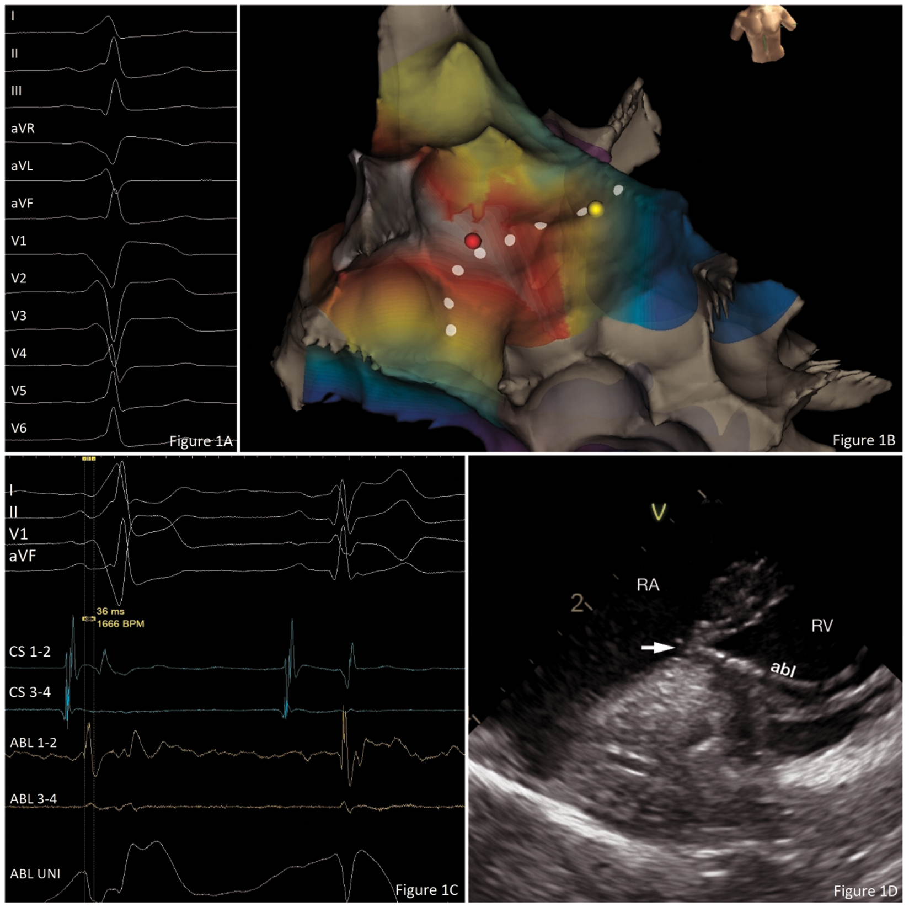

Transjugular approach for zero-fluoroscopy catheter ablation of the right anterolateral accessory pathway
Katetrska ablacija desne anterolateralne akcesorne poti preko transjugularnega pristopa brez rentgenske diaskopije
Abstract
We present a case of successful zero-fluoroscopy catheter ablation (CA) of the right anterolateral accessory pathway (AP) via a transjugular approach in an 18-year-old patient with a congenital agenesis of inferior vena cava (IVC). A three-dimensional (3D) electroanatomic mapping (EAM) system and intracardiac echocardiography (ICE) were used to navigate the catheters in the heart.
Izvleček
Predstavljamo primer uspešne katetrske ablacije desne anterolateralne akcesorne poti pri 18- letnem bolniku z agenezijo spodnje votle vene preko transjugularnega pristopa brez rentgenske diaskopije. Za usmerjanje katetrov v srcu smo uporabili tridimenzionalno mapiranje in znotrajsrčno ultrazvočno kardiografijo.
1 Introduction
Usually, the catheter ablation (CA) is performed via a transfemoral approach. In the transfemoral approach, the femoral vein is punctured and the catheters are then advanced into the body and to the heart through the femoral vein and inferior vena cava (IVC). The advancement of the catheters to the heart can be difficult or impossible in patients with congenital IVC anomalies. Other alternative approach for CA in such patients is the transjugular approach. The transjugular approach is done through a puncture of the internal jugular vein. The catheters are then advanced through the puncture into the vein and through the superior vena cava into the heart.
During CA, fluoroscopy is commonly used for visualization and guidance of the catheters in the heart. New methods have been suggested to avoid harmful effects of the radiation exposure to the patient, as well as to the operator (1). One of the methods is zero-fluoroscopy approach, where no fluoroscopy is used during CA. Visualization and guidance of the catheters is done by the help of the three-dimensional (3D) electroanatomic mapping (EAM) system and ICE (2).
2 Case presentation
An 18-year-old man with congenital agenesis of IVC and structurally normal heart was admitted to our department for CA due to Wolff-Parkinson-White (WPW) syndrome. The 12-lead ECG suggested right anterolateral accessory pathway (AP) (Figure 1A).

A: A 12-lead ECG showing a ventricular pre-excitation associated with right anterolateral AP.
B: A 3D EAM showing ventricular activation during sinus rhythm. The white area represents the earliest and the purple area the latest ventricular activation. Red dot represents the site of radiofrequency ablation. Yellow dot marks the site of His potential recording. White dots mark an approximate location of the tricuspid annulus.
C: A recording of intracardiac potentials during the successful ablation. Potential in the channel ABL 1–2 (distal electrode of the ablation catheter) is recorded 36 ms before the start of the delta wave in the first part of the recording. The second part of the recording shows a QRS complex without pre-excitation and delay between the atrial and ventricular potential in the channel ABL 1–2 as evidence of the loss of AP conduction.
D: An image of ICE during the ablation showing the position of ablation catheter in the heart. RA – right atrium; RV – right ventricle; abl – ablation catheter; the arrow is pointing to the tip of the ablation catheter positioned at the ventricular aspect of the anterolateral part of the tricuspid annulus.
The procedure was performed under conscious sedation. We performed two ultrasound-guided percutaneous punctures of the right internal jugular vein and navigated catheters by the use of 3D EAM system. A 4-polar non-steerable diagnostic catheter was inserted into the coronary sinus and a non-irrigated ablation catheter into the right ventricle. Mapping during sinus rhythm confirmed the earliest ventricular activation at the anterolateral part of the tricuspid annulus (Figure 1B). Radiofrequency ablation of the site with 30 W terminated the ventricular pre-excitation and conduction over the AP within 3 seconds (Figure 1C). During the procedure we used ICE to navigate and ensure the stability of the ablation catheter at the ablation site (Figure 1D). No fluoroscopy was used at any time during the procedure. The procedure lasted for 135 minutes. There were no procedure-related complications and the patient was discharged from the hospital the next day. Pre-excitation was no longer present on the 12 lead ECG.
3 Discussion
Supraventricular tachycardia (SVT) is the most common cardiac arrhythmia in children requiring therapy (3). WPW syndrome is the most common type of SVT in adolescent population with a prevalence of 1.5 per 1000 (4). This group of patients is at risk of sudden cardiac death, which is estimated at 2 per 1000 patient years (5). The recommended treatment for patients with WPW syndrome is radiofrequency CA (6).
The patient in our case report had a congenital agenesis of IVC – a rare congenital anomaly of IVC affecting up to 1 % of general population (7). The absence of the IVC precluded the transfemoral approach, and the transjugular approach was chosen as an alternative. Recently, a case series of CA of right-sided AP anterior and anterolateral AP via a transjugular approach in paediatric population with short fluoroscopy times and doses was published. They reported a high acute and long-term success rate, as well as no complications related to the procedure (8).
Although fluoroscopy can be an effective way to visualize and guide the catheters in the heart, it also exposes the patients and the operator to non-negligible ionizing radiation. Recent epidemiological studies show that even low doses of ionizing radiation can be harmful and no safe-dose limit exists (1). Paediatric patients are at a higher risk of potentially harmful effects of ionizing radiation exposure – estimated at a four times higher than in a 50-year old male patient (9). For the operator, the average exposure is around 5 mSV with a typical cumulative lifetime risk on the order of magnitude of 1 cancer per 100 exposed subjects (10). Recent observational case series observed a disproportionate number of tumours in the left side of the brain – the region known to be more exposed to ionizing radiation (11).
4 Conclusion
To our knowledge this is the first case report to confirm the feasibility of successful ablation of a right-sided anterolateral AP via a transjugular approach without any use of fluoroscopy. A combination of 3D EAM system and ICE can be used to ensure both the correct position and stability of the ablation catheter in the heart. In addition, the fluoroless procedure enables avoidance of potential harmful effects of fluoroscopy exposure for the patient and the operator.